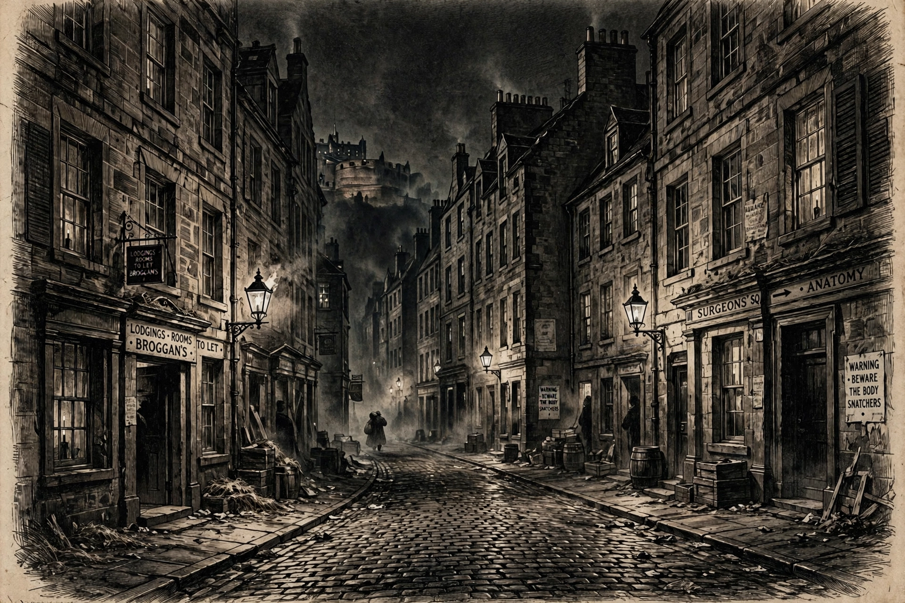

 William Burke and William Hare | |
| Date | 1827–1828 |
|---|---|
| Location | Edinburgh, Scotland |
| Perpetrators | William Burke; William Hare |
| Victims | 16 |
| Buyer of bodies | Dr Robert Knox |
| Outcome | Burke hanged (28 January 1829) and publicly dissected; Hare released after testifying |
The Burke and Hare murders were a series of 16 murders committed over a period of about ten months in 1828 in Edinburgh, Scotland. They were undertaken by William Burke and William Hare, who sold the corpses to Dr Robert Knox for dissection at his anatomy lectures. Edinburgh's anatomy schools faced a shortage of cadavers — the only legal supply, executed criminals, was dwindling — creating a lucrative market for bodies, which "resurrection men" usually supplied by grave-robbing. Burke and Hare instead turned to murder.
Burke and Hare were Irish labourers who had come to Scotland to work on the Union Canal. Hare ran a lodging house in Edinburgh's West Port with his wife Margaret. In November 1827, when an elderly lodger died owing Hare money, the pair sold the body to Knox's school, receiving £7 10s — a large sum. The ease of the profit led them to kill.
Between December 1827 and October 1828, Burke and Hare murdered 16 people, mostly lodgers and vulnerable acquaintances, by getting them drunk and smothering them — a method that left few marks; the verb "to burke" entered English from the case. Victims included a miller, an English street seller, an elderly woman and her grandson, and the well-known local character "Daft Jamie," whose disappearance raised suspicions. The final victim, Margaret Docherty, was discovered by lodgers hidden under a bed, leading to the pair's arrest.
Hare turned King's evidence and testified against Burke, securing his own immunity. Burke was convicted and hanged on 28 January 1829 before a crowd of over 20,000; his body was publicly dissected at the Edinburgh Medical College, and his skeleton remains on display at the University of Edinburgh's Anatomical Museum. Knox was never prosecuted, though his reputation was ruined by public outrage. Hare was released and disappeared from history.
The murders, alongside the similar London "Italian Boy" case, prompted Parliament to pass the Anatomy Act 1832, which expanded the legal supply of cadavers to unclaimed bodies from workhouses and hospitals, ending the trade in murdered and exhumed corpses. The case remains one of the most infamous in Scottish criminal history and has inspired books, plays, and films.